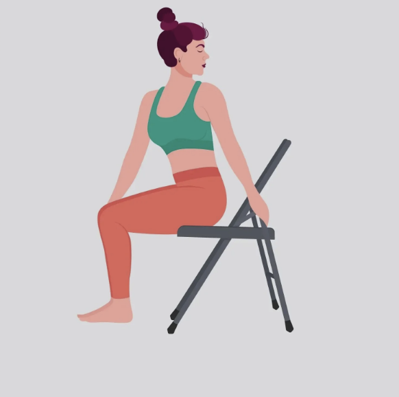

What is Iyengar Yoga?
A yoga style that focuses on alignment and involves the use of props. It is known for its therapeutic and preventive effects. Its name comes from its creator, Bellur Krishnamachar Sundaraja (B.K.S) Iyengar.
A yoga style that focuses on alignment and involves the use of props. It is known for its therapeutic and preventive effects. Its name comes from its creator, Bellur Krishnamachar Sundaraja (B.K.S) Iyengar.
B.K.S. Iyengar recognised that all bodies are unique and have different strengths and weaknesses. He, therefore, advocated the use of props – blocks, chairs, belts, and blankets, etc. – to help students to gain the alignment suitable for their body, meaning that asanas could be practiced safely and harmoniously.

